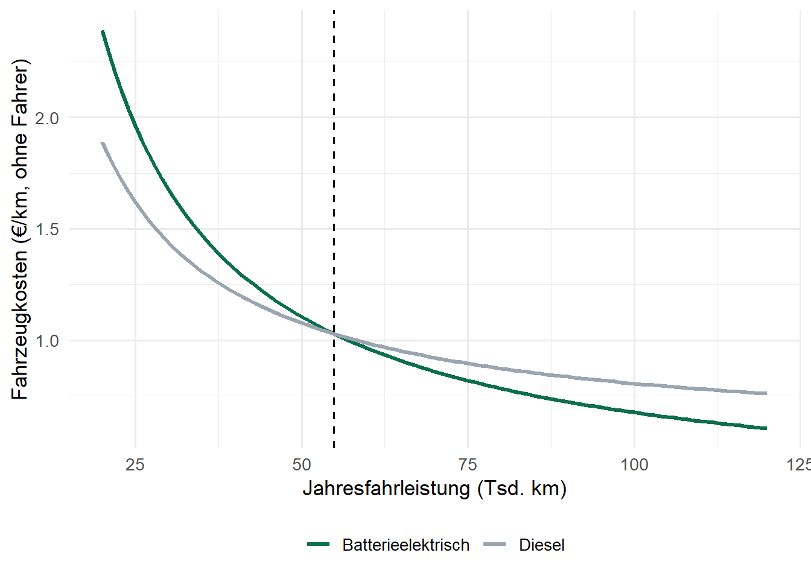

| Verkehrsträger | Typische Einheit | Netz | THG (g CO₂e/tkm) | Typische Güter |
|---|---|---|---|---|
| Straße | Sattelzug ~25 t, 33 Paletten | sehr dicht | ~110–120 | Stückgut, Frische |
| Schiene | Ganzzug ~1.000–2.000 t | Gleisanschluss nötig | ~16–18 | Massengut, Container |
| Binnenschiff | Großmotorgüterschiff ~2.000–3.000 t | Wasserstraßen | ~31–33 | Massengut, Container |
| Seeschiff | Containerschiff bis ~24.000 TEU | Häfen | ~5–20 | Container, Massengut |
| Luft | Frachtflugzeug ~100–120 t | Flughäfen | ~500–1.000 | hochwertig, eilig, verderblich |
13 Verkehrsmittel, Antriebe und Transportkosten
Lernziele
Nach der Bearbeitung dieses Kapitels können Sie …
- Verkehrsträger, Verkehrsmittel und Ladeeinheiten unterscheiden und für eine Transportaufgabe auswählen,
- die Break-even-Entfernung des kombinierten Verkehrs berechnen,
- konventionelle und alternative Antriebstechnologien im Straßengüterverkehr erläutern und die Einschränkungen batterieelektrischer Fahrzeuge für die Transport- und Tourenplanung ableiten,
- neue Optionen der letzten Meile (Lastenrad, Mikrodepot, Drohne) einordnen,
- Transportkostensätze (€/km, €/h, €/tkm, €/Stopp) aus einer Fahrzeugkostenrechnung herleiten und Antriebe über die Gesamtkosten vergleichen,
- Eigen- und Fremdtransport wirtschaftlich vergleichen und Preisgleitklauseln anwenden,
- Transportemissionen nach ISO 14083 berechnen und auf Sendungen verteilen,
- Modellparameter als Listen verwalten und Szenarien mit
modifyList()ableiten.
Literatur zur Vertiefung
- Verkehrsträger und Transportentscheidungen: (Chopra und Meindl 2025); (Günther und Tempelmeier 2012).
- Elektrische Tourenplanung: (Schneider u. a. 2014). Lkw-Drohnen-Kombinationen: (Murray und Chu 2015).
- Emissionsbilanzierung: (iso2023_14083?); (sfc2023glec?).
13.1 Einführung
Die bisherigen Kapitel haben Transporte stark vereinfacht: Im Warehouse Location Problem und im Transportproblem waren die Kosten je transportierter Box als feste Zahl \(c_{ij}\) vorgegeben. Woher kommen diese Zahlen? Sie hängen davon ab, womit transportiert wird (Verkehrsträger, Fahrzeug, Antrieb), wie weit (Entfernung im Netz) und wie gut das Fahrzeug ausgelastet ist. Dieses Kapitel öffnet diese „Black Box“. Es gibt einen Überblick über Verkehrsträger, Fahrzeuge und Antriebe und zeigt, welche Einschränkungen neue Antriebe für die Planung mit sich bringen. Den Kern bildet die Transportkostenrechnung: Aus Anschaffungspreisen, Verbräuchen, Löhnen und Maut werden Kostensätze abgeleitet, mit denen sich Antriebe, Eigen- und Fremdtransport sowie Distributionsvarianten vergleichen lassen. Den Abschluss bildet die Bilanzierung von Transportemissionen nach dem internationalen Standard ISO 14083.
Fallstudie: Drei Transportentscheidungen bei SushiFresh
- Beschaffung: Der Lachs kommt aus Norwegen (ca. 1.700 km). Bisher wird er per Kühl-Lkw mit Fähre transportiert. Ein Lieferant bietet eine Kombination aus Lkw und Bahn an. Welcher Verkehrsträger passt zu Frischfisch?
- Fuhrpark: Das Leasing des 7,5-t-Diesel-Kühl-Lkw, der die Filialen beliefert, läuft aus. Alternative ist ein batterieelektrischer Kühl-Lkw. Was kostet das, und wie weit kommt er?
- Letzte Meile: Für den geplanten Lieferdienst an Endkunden in Frankfurt (Kapitel 5) stehen E-Transporter, Lastenräder und sogar Drohnen zur Diskussion. Was kostet eine Zustellung?
13.2 Verkehrsträger
Definition: Verkehrsträger, Verkehrsmittel, Ladeeinheiten
Verkehrsträger sind die Infrastrukturen, auf denen Verkehr stattfindet: Straße, Schiene, Wasser (Binnen- und Seeschifffahrt), Luft und Rohrleitung. Verkehrsmittel sind die Fahrzeuge, die Güter bewegen: Lastenrad, Transporter, Lkw, Güterzug, Schiff, Flugzeug, Drohne. Ladeeinheiten sind standardisierte Behälter, die zwischen Verkehrsmitteln wechseln können: Palette, Rollcontainer, Wechselbrücke, Sattelauflieger, ISO-Container.
Wird nur ein Verkehrsträger genutzt, spricht man von unimodalem, bei mehreren von multimodalem Verkehr. Wechselt die Ware dabei den Verkehrsträger, ohne aus ihrer Ladeeinheit genommen zu werden, handelt es sich um intermodalen bzw. kombinierten Verkehr.
Die Treibhausgaswerte für Straße, Schiene und Binnenschiff sind Durchschnittswerte des Umweltbundesamts (Umweltbundesamt 2024). Für See- und Luftfracht sind es grobe Größenordnungen, die stark von Schiffsgröße bzw. Flugzeugtyp abhängen. Kapitel 4 hat mit solchen Emissionsfaktoren bereits die Verkehrsträgerwahl unter Nachhaltigkeitsgesichtspunkten durchgerechnet. Kein Verkehrsträger dominiert alle anderen: Die Straße ist flexibel und flächendeckend, aber teuer und emissionsintensiv; Bahn und Binnenschiff sind günstig und klimafreundlich, aber an Netze, Fahrpläne und im Fall des Rheins an den Wasserstand gebunden; die Luftfracht ist schnell, aber sehr teuer. Die Wahl folgt dem Produkt (Wert, Verderblichkeit, Gewicht), der Entfernung und der Bedeutung der Lieferzeit, also wieder dem Strategic Fit aus Kapitel 2.
13.2.1 Kombinierter Verkehr
Im kombinierten Verkehr übernimmt der Lkw nur den Vor- und Nachlauf zwischen Versender bzw. Empfänger und Terminal, den Hauptlauf übernehmen Bahn oder Schiff. Die Kosten des Lkw-Direktverkehrs wachsen proportional zur Entfernung \(d\): \(K_S(d) = k_S \cdot d\). Im kombinierten Verkehr kommen entfernungsunabhängige Kosten für zwei Umschläge \(u\) sowie Vor- und Nachlauf hinzu, dafür ist der Kilometer im Hauptlauf günstiger:
\[ K_{KV}(d) = 2u + 2 k_V d_V + k_B \cdot d \qquad\Rightarrow\qquad d^* = \frac{2u + 2 k_V d_V}{k_S - k_B} \]
Oberhalb der Break-even-Entfernung \(d^*\) ist der kombinierte Verkehr günstiger.
Code
k_S <- 1.76 # Lkw inkl. Fahrer (EUR/km), siehe Beispiel 3 unten
u <- 45 # Umschlag je Terminal (EUR je Ladeeinheit)
k_V <- 2.20 # Vor-/Nachlauf (EUR/km, kurze Strecken teurer)
d_V <- 25 # Länge von Vor- und Nachlauf (km)
k_B <- 0.95 # Hauptlauf Bahn (EUR/km je Ladeeinheit)
d_star <- (2 * u + 2 * k_V * d_V) / (k_S - k_B)
round(d_star)[1] 247Unter diesen Annahmen lohnt sich der kombinierte Verkehr ab rund 247 km. In der Praxis kommen Fahrplanbindung, Terminalzeiten und Wartezeiten hinzu, die den Vorteil schmälern. Ein Anreiz liegt im Gewicht: Im Vor- und Nachlauf des kombinierten Verkehrs sind in Deutschland 44 t Gesamtgewicht statt 40 t erlaubt.
Für den Lachs von SushiFresh zählt vor allem die Resthaltbarkeit beim Eintreffen. Jeder zusätzliche Transporttag verkürzt die Verkaufszeit in der Filiale und erhöht die Überdeckungskosten im Newsvendor-Modell (Kapitel 10). Eine sinnvolle Lösung trennt die Produkte: kombinierter Verkehr für tiefgekühlte oder länger haltbare Ware wie Reis, Nori und TK-Garnelen, Lkw für frischen Lachs.
13.3 Straßengüterverkehr: Fahrzeuge und Antriebe
| Fahrzeug | zul. Gesamtgewicht | Nutzlast | Führerschein | Lkw-Maut | Einsatz |
|---|---|---|---|---|---|
| Lastenrad | bis ~0,4 t | 100–250 kg | keiner (Pedelec) | nein | Innenstadt, KEP |
| Transporter | bis 3,5 t | ~1 t | B | nein | letzte Meile |
| Leichter Lkw | 7,5 t | ~2–3 t | C1 | ja | Filialbelieferung |
| Motorwagen | 12–26 t | ~5–15 t | C | ja | Regionalverteilung |
| Sattelzug | 40 t | ~25 t | CE | ja | Fernverkehr |
Jede Fahrzeugklasse bringt eigene Restriktionen für die Planung mit: Kapazität nach Gewicht und Volumen, Fahrerqualifikation, Maut, Zufahrtsbeschränkungen sowie die Lenk- und Ruhezeiten, die ab 3,5 t nach der Verordnung (EG) Nr. 561/2006 gelten (nach 4,5 Stunden Lenkzeit 45 Minuten Pause, in der Regel höchstens 9 Stunden Lenkzeit pro Tag).
Bei den Antrieben dominiert der Diesel, doch die Alternativen gewinnen an Bedeutung:
- HVO und Biodiesel sind Kraftstoffe aus Rest- und Abfallstoffen, die in vielen Diesel-Lkw ohne Umbau getankt werden können. Sie senken die Treibhausgasemissionen deutlich, ändern aber nichts an Reichweite und Planung.
- Bio-LNG/CNG (Methan) ist im Lkw-Bereich eine Nische mit dünnem Tankstellennetz.
- Batterieelektrische Lkw (BEV) sind die derzeit dynamischste Alternative. Sie verändern die Planung grundlegend (siehe unten).
- Brennstoffzellen-Lkw mit Wasserstoff spielen bislang kaum eine Rolle: Es gibt wenige Tankstellen, und Wasserstoff ist teuer.
- Oberleitungs-Lkw werden auf Teststrecken erprobt, etwa auf der A5 in Hessen.
13.3.1 Batterieelektrische Lkw
Schwere E-Lkw für den Fernverkehr haben heute Batterien mit rund 500–800 kWh und verbrauchen je nach Last, Wetter, Geschwindigkeit und Topografie etwa 1,2–1,8 kWh je Kilometer. Herstellerangaben zur Reichweite (bei 40 t etwa 500 km) werden in der Praxis um 15–30 % unterschritten. Geladen wird über Nacht im Depot mit 50–150 kW, unterwegs an Schnellladepunkten mit bis zu rund 400 kW (CCS) oder mit dem Megawatt Charging System (MCS), das seit 2026 als IEC 63379 genormt ist. Ein schwerer E-Lkw kostet in der Anschaffung etwa das 2,3- bis 2,8-Fache eines Diesel-Sattelzugs.
Die Rahmenbedingungen in Deutschland verbessern die Wirtschaftlichkeit: Emissionsfreie Lkw sind bis zum 30. Juni 2031 von der Lkw-Maut befreit (SIHK zu Hagen 2026), während ein Diesel-Sattelzug der Schadstoffklasse Euro VI (CO₂-Klasse 1) 34,8 ct/km zahlt (Toll Collect GmbH 2024). Für emissionsfreie Lkw ist ein Zusatzgewicht von bis zu 2 t zulässig, um das Batteriegewicht teilweise auszugleichen. Eine Revision der EU-Richtlinie 96/53/EG über Maße und Gewichte sieht je nach Achskonfiguration höhere Zuschläge vor, die Umsetzung steht aber noch aus. Strom kostet im Depot etwa 20–28 ct/kWh netto, an öffentlichen Lkw-Schnellladern etwa 38–60 ct/kWh netto. Diese Zahlen sind Marktbeobachtungen und Schätzungen für Herbst 2026, keine Listenpreise.
Laden ist nicht linear. Die Ladeleistung sinkt mit steigendem Ladezustand, damit die Batterie geschont wird. Das folgende Modell nimmt eine 600-kWh-Batterie an, die bis 60 % mit 750 kW und danach mit linear auf 150 kW sinkender Leistung geladen wird. Eine while-Schleife simuliert den Ladezustand Minute für Minute.
Code
kap <- 600 # kWh
leistung <- function(soc) ifelse(soc < 0.6, 750, 750 - 600 * (soc - 0.6) / 0.4)
soc <- 0.2; minute <- 0; verlauf <- tibble(minute = 0, soc = soc)
while (soc < 0.95) {
soc <- soc + leistung(soc) / 60 / kap # Energie einer Minute
minute <- minute + 1
verlauf <- add_row(verlauf, minute = minute, soc = soc)
}
c(SoC_nach_45_min = round(verlauf$soc[verlauf$minute == 45], 2),
Minuten_20_bis_80 = min(verlauf$minute[verlauf$soc >= 0.8])) SoC_nach_45_min Minuten_20_bis_80
0.93 32.00 In der gesetzlichen 45-Minuten-Pause lässt sich der Ladezustand von 20 % auf über 90 % anheben, was einige hundert Kilometer Reichweite bringt, vorausgesetzt, ein freier Ladepunkt liegt zur Pausenzeit auf der Route. Weil die letzten Prozente am längsten dauern, wird in der Planung meist nur bis etwa 80 % geladen.
Die Reichweite schwankt. Sie hängt von der Masse (Beladung, Batteriegewicht), der Geschwindigkeit (der Luftwiderstand wächst quadratisch), der Topografie, der Temperatur (Heizung, kalte Batterie) und von Nebenverbrauchern ab, bei SushiFresh vor allem vom Kühlaggregat. Beim Diesel spielt das für die Planung kaum eine Rolle, der Tank reicht. Beim E-Lkw entscheidet es über die Zulässigkeit einer Tour.
13.3.2 Einschränkungen für die Planung
| Technische Eigenschaft | Folge für die Planung |
|---|---|
| Begrenzte Batteriekapazität | max. Tourlänge, Energie-Nebenbedingung je Tour |
| Lange, nichtlineare Ladezeit | Ladezeit als Teil der Tourdauer, Pausen nutzen |
| Wenige Schnellladepunkte | Ladestopps als zusätzliche Knoten im Netz |
| Begrenzter Netzanschluss im Depot | Ladefenster staffeln, Schichtplanung |
| Höheres Leergewicht | geringere Nutzlast, Kapazitätsrestriktion |
| Verbrauch abhängig von Last und Wetter | saisonabhängige Reichweite, Puffer einplanen |
In Tourenplanungsmodellen werden diese Restriktionen als E-VRP (Electric Vehicle Routing Problem) abgebildet (Schneider u. a. 2014). Kern ist eine Energie-Nebenbedingung: Mit dem Ladezustand \(q_j\) bei Ankunft in \(j\), dem Verbrauch \(e_{ij}\) auf der Fahrt von \(i\) nach \(j\), der binären Fahrtvariablen \(x_{ij}\) und der nutzbaren Kapazität \(Q\) gilt
\[ 0 \leq q_j \leq q_i - e_{ij} \cdot x_{ij} + Q \cdot (1 - x_{ij}) \qquad \forall i, j, \qquad q_{\text{Depot}} = Q . \]
Wird von \(i\) nach \(j\) gefahren (\(x_{ij} = 1\)), sinkt der Ladezustand um den Verbrauch. Andernfalls ist die Bedingung durch den Term \(Q \cdot (1 - x_{ij})\) wirkungslos. An Ladestationen wird \(q_i\) wieder angehoben.
Fallstudie: Reicht ein E-Kühl-Lkw für die heutige Belieferung?
Ein 7,5-t-E-Kühl-Lkw hat eine Batterie von 140 kWh, von denen nach Abzug einer Reserve für Alterung und Unvorhergesehenes \(Q = 110\) kWh für die Planung nutzbar sind. Mit Kühlaggregat verbraucht er im Sommer etwa 0,62 kWh/km, im Winter wegen Heizung und kalter Batterie etwa 0,70 kWh/km. Heute fährt SushiFresh Pendelverkehr: Jede Filiale wird einzeln angefahren, insgesamt 296 km pro Tag.
Code
Bedarf_Pendel_Sommer Bedarf_Pendel_Winter max_km_Sommer
184 207 177
max_km_Winter
157 Der heutige Pendelverkehr ist mit dem E-Lkw ohne Zwischenladen unmöglich. Eine Tour darf im Winter höchstens rund 157 km lang sein. Ob eine Rundtour durch alle sechs Filialen diese Grenze einhält, hängt von den Entfernungen im Straßennetz (Kapitel 14) und von einer guten Reihenfolge (Kapitel 15) ab. Bei E-Fahrzeugen wird Tourenplanung damit zur Frage der Machbarkeit, nicht nur der Kosten.
13.4 Die letzte Meile
Die letzte Meile, also die Zustellung an den Endkunden, ist der teuerste Abschnitt vieler Distributionsketten. Es gibt viele Stopps mit kleinen Sendungen, kaum Bündelung, Parkplatzsuche, Zeitfenster und Nicht-Antreffen. Die Kosten fallen je Stopp an, nicht je Kilometer, und werden vom Personal dominiert. Neue Verkehrsmittel und Konzepte sollen die Kosten je Stopp senken:
- Lastenräder (Pedelecs mit Motorunterstützung bis 25 km/h) transportieren 100–250 kg, nutzen Radwege, brauchen keinen Parkplatz und keinen Führerschein. Sie werden aus einem Mikrodepot in der Stadt (Container, Ladenfläche) versorgt, das seinerseits per Lkw beliefert wird. Daraus entsteht ein zweistufiges Tourenplanungsproblem.
- Drohnen transportieren typischerweise 2–5 kg über 10–40 km (Multikopter), unabhängig vom Straßenverkehr. Flüge außerhalb der Sichtweite benötigen nach der EU-Drohnenverordnung (EU) 2019/947 eine Betriebsgenehmigung. Wetter, Lärm und Akzeptanz sind weitere Hürden. Sinnvolle Einsatzfelder sind Medizin, Ersatzteile und schwer erreichbare Orte. In Kombination mit einem Lkw, von dem die Drohne startet, entsteht das Flying Sidekick TSP (Murray und Chu 2015). Für SushiFresh bleibt die Drohne eine Nische: 3 kg entsprechen nur sechs bis sieben Boxen.
- E-Transporter bis 4,25 t sind dauerhaft von der Lkw-Maut befreit, Paketstationen verlagern die letzten Meter auf den Kunden, und Lieferroboter werden auf Gehwegen erprobt.
Neue Verkehrsmittel ändern damit die Struktur des Planungsproblems: Aus einem Tourenplanungsproblem wird ein zweistufiges Problem (Mikrodepot), ein synchronisiertes Problem (Lkw und Drohne) oder ein Problem mit Energie-Nebenbedingungen (E-VRP).
13.5 Transportkostensätze
13.5.1 Kalkulationsschema
Die Fahrzeugkostenrechnung unterscheidet fixe (zeitabhängige) und variable (wegabhängige) Kosten:
- Fixe Kosten pro Jahr: Abschreibung \(\frac{A - RW}{N}\) (Anschaffungswert \(A\), Restwert \(RW\), Nutzungsdauer \(N\)), kalkulatorische Zinsen \(\frac{A + RW}{2} \cdot i\) auf das durchschnittlich gebundene Kapital, Versicherung, Kfz-Steuer, anteilige Gemeinkosten, bei E-Lkw zusätzlich die Ladeinfrastruktur sowie das Fahrerpersonal.
- Variable Kosten pro km: Energie (Verbrauch × Preis), Wartung und Reparatur, Reifen, AdBlue sowie Maut (Mautsatz × Anteil mautpflichtiger Strecke).
Daraus ergeben sich die gängigen Kostensätze:
\[ k_{km} = \frac{K_{\text{fix}}}{L_{\text{Jahr}}} + k_{\text{var}} \qquad\quad k_h = \frac{K_{\text{Personal}}}{T_{\text{Jahr}}} \qquad\quad k_{tkm} = \frac{k_{km}}{m \cdot \alpha \cdot (1 - \lambda)} \]
mit Jahresfahrleistung \(L\), produktiven Stunden \(T\), Nutzlast \(m\) (in t), Auslastung \(\alpha\) und Leerfahrtanteil \(\lambda\). Für die Tourenplanung ist ein zweigliedriger Kostensatz aus €/km und €/h üblich, weil sich Touren in Strecke und Dauer unterscheiden.
R-Exkurs: Parameterlisten und Szenarien mit modifyList()
Ein Fahrzeug wird durch ein Dutzend Parameter beschrieben. Statt sie als lose Variablen zu verwalten, fassen wir sie in einer benannten Liste zusammen (Kapitel 7). Eine Funktion erhält die Liste als ein einziges Argument und greift mit p$A auf die Elemente zu. Varianten eines Fahrzeugs, etwa mit anderem Dieselpreis, entstehen mit modifyList(alt, list(...)): Die Funktion kopiert die Liste und ersetzt nur die genannten Elemente. So bleibt jedes Szenario vollständig dokumentiert, und die Ausgangsdaten werden nie versehentlich überschrieben.
Code
fahrzeugkosten <- function(p, km_jahr) {
afa <- (p$A - p$RW) / p$N # lineare Abschreibung
zins <- (p$A + p$RW) / 2 * p$i # kalk. Zinsen
fix <- afa + zins + p$versicherung + p$steuer + p$sonst_fix
var_km <- p$energie_km + p$wartung_km + p$reifen_km + p$maut_km
list(afa = afa, zins = zins, fix = fix, var_km = var_km,
gesamt_km = fix / km_jahr + var_km)
}
diesel_preis <- 2.00 # EUR/l netto (rund 2,40 EUR/l brutto im September 2026)
kuehl_diesel <- list(A = 95000, RW = 15000, N = 6, i = 0.05,
versicherung = 4500, steuer = 500, sonst_fix = 6000,
energie_km = 0.17 * diesel_preis, # 17 l/100 km inkl. Kühlung
wartung_km = 0.09, reifen_km = 0.03,
maut_km = 0.151 * 0.5) # 15,1 ct/km auf 50 % der Strecke
# Szenario: Diesel kostet 1,60 EUR/l -- nur die Energie ändert sich
kuehl_billig <- modifyList(kuehl_diesel, list(energie_km = 0.17 * 1.60))
c(Basis = kuehl_diesel$energie_km, Szenario = kuehl_billig$energie_km) Basis Szenario
0.340 0.272 Alle Zahlen der folgenden Beispiele sind gerundete Annahmen (netto, Stand Herbst 2026), etwa zum Dieselpreis von rund 2,40 €/l brutto im September 2026 (Statistisches Bundesamt 2026). Sie ersetzen keine Angebote, zeigen aber die Größenordnungen und vor allem die Struktur der Rechnung.
13.5.2 Beispiel 1: Kostensätze des Diesel-Kühl-Lkw
Code
liefertage <- 300
fahrer_jahr <- 52000; fahrer_std <- 1650
k_h <- fahrer_jahr / fahrer_std # Fahrer-Stundensatz
kd <- fahrzeugkosten(kuehl_diesel, km_jahr = 296 * liefertage)
c(AfA = kd$afa, Zinsen = kd$zins, Fix_Jahr = kd$fix, Fix_Tag = kd$fix / liefertage,
var_km = kd$var_km, gesamt_km = kd$gesamt_km, Fahrer_h = k_h) |> round(3) AfA Zinsen Fix_Jahr Fix_Tag var_km gesamt_km Fahrer_h
13333.333 2750.000 27083.333 90.278 0.536 0.840 31.515 Der Kühl-Lkw kostet im Pendelverkehr (296 km pro Tag, 300 Liefertage) rund 0,84 € je km, der Fahrer 31,52 € je Stunde. Damit lässt sich der Kostensatz von 0,02 € je Box und km nachrechnen, den das Warehouse Location Problem in Kapitel 7 unterstellt hat. Im Pendelverkehr fährt der Lkw 296 km am Tag und braucht dafür bei 45 km/h, 15 Minuten Entladen je Filiale und 15 Minuten Beladen je Fahrt knapp zehn Stunden. Die beladenen Box-Kilometer betragen \(\sum_j \mu_j \cdot d_{Rj}\), Rückfahrten sind Leerfahrten.
Code
mu <- c(C1 = 120, C2 = 150, C3 = 280, C4 = 90, C5 = 110, C6 = 95)
dR <- c(C1 = 26, C2 = 22, C3 = 28, C4 = 6, C5 = 39, C6 = 27) # km ab Raunheim
h_pendel <- 296 / 45 + 6 * 0.25 + 6 * 0.25
kosten_tag <- kd$fix / liefertage + kd$var_km * 296 + k_h * h_pendel
c(Kosten_Tag = kosten_tag, Box_km = sum(mu * dR),
Satz_Box_km = kosten_tag / sum(mu * dR), je_Box = kosten_tag / sum(mu)) |> round(3) Kosten_Tag Box_km Satz_Box_km je_Box
550.631 21655.000 0.025 0.652 Der Satz von rund 0,025 € je Box-km liegt in der Größenordnung der Annahme aus Kapitel 7. Die Differenz entsteht vor allem durch die voll eingerechneten Lade- und Entladezeiten. Ein linearer Satz je Box-km unterstellt allerdings Einzelanfahrten. Was eine Rundtour spart, berechnet Kapitel 15 mit genau diesen Kostensätzen.
13.5.3 Beispiel 2: Diesel oder E-Lkw?
Der E-Kühl-Lkw ist teurer in der Anschaffung, spart aber Energie, Wartung, Maut und Kfz-Steuer. Wir unterstellen Rundtourbetrieb mit rund 153 km pro Tag. Diese Tourlänge wird in Kapitel 15 hergeleitet.
Code
strom_depot <- 0.24
kuehl_bev <- modifyList(kuehl_diesel, list(
A = 170000, RW = 30000, versicherung = 5000, steuer = 0,
sonst_fix = 6000 + 3500, # inkl. Depot-Ladepunkt
energie_km = 0.66 * strom_depot, # 66 kWh/100 km Jahresmittel
wartung_km = 0.06, maut_km = 0))
km_tour_jahr <- 153 * liefertage
c(Diesel = fahrzeugkosten(kuehl_diesel, km_tour_jahr)$gesamt_km,
BEV = fahrzeugkosten(kuehl_bev, km_tour_jahr)$gesamt_km) |> round(3)Diesel BEV
1.126 1.182 Bei rund 46 Tausend km pro Jahr ist der E-Lkw noch etwas teurer. Weil er hohe Fixkosten und niedrige variable Kosten hat, sinkt sein Kostennachteil mit der Fahrleistung. Die Break-even-Fahrleistung, bei der beide Antriebe gleich viel kosten, lässt sich mit uniroot() (Kapitel 10) bestimmen:
Code
[1] 54859Code
tibble(L = seq(20000, 120000, 1000)) |>
mutate(Diesel = map_dbl(L, ~ fahrzeugkosten(kuehl_diesel, .x)$gesamt_km),
Batterieelektrisch = map_dbl(L, ~ fahrzeugkosten(kuehl_bev, .x)$gesamt_km)) |>
pivot_longer(-L, names_to = "Antrieb", values_to = "k_km") |>
ggplot(aes(x = L / 1000, y = k_km, colour = Antrieb)) +
geom_line(linewidth = 1.2) +
geom_vline(xintercept = L_star / 1000, linetype = "dashed") +
scale_colour_manual(values = c("#0B6E4F", "#9AA5B1")) +
labs(x = "Jahresfahrleistung (Tsd. km)", y = "Fahrzeugkosten (€/km, ohne Fahrer)",
colour = NULL) +
theme_minimal(base_size = 13) + theme(legend.position = "bottom")
Ab rund 55 Tausend km pro Jahr ist der E-Lkw günstiger. Ein zweiter Einsatz am Nachmittag, etwa für Beschaffungsfahrten, würde die Rechnung zu seinen Gunsten verschieben. Den Pendelverkehr mit fast 90.000 km pro Jahr könnte er zwar wirtschaftlich fahren, scheitert dort aber an der Reichweite.
13.5.4 Beispiel 3: Fernverkehr mit dem Sattelzug
Im schweren Fernverkehr wiegt die Maut stärker. Wir vergleichen eine Diesel- und eine batterieelektrische Sattelzugmaschine bei 120.000 km pro Jahr und fünf Jahren Nutzung, einschließlich der Fahrerkosten.
Code
fv_diesel <- list(A = 125000, RW = 35000, N = 5, i = 0.05,
versicherung = 7000, steuer = 550, sonst_fix = 0,
energie_km = 0.28 * diesel_preis + 0.02, # 28 l/100 km + AdBlue
wartung_km = 0.12, reifen_km = 0.04,
maut_km = 0.348 * 0.9) # 34,8 ct/km, 90 % mautpflichtig
fv_bev <- modifyList(fv_diesel, list(
A = 300000, RW = 70000, versicherung = 9000, steuer = 0, sonst_fix = 10000,
energie_km = 1.20 * (0.8 * 0.24 + 0.2 * 0.48), # 80 % Depot, 20 % öffentlich
wartung_km = 0.08, maut_km = 0))
fahrer_km <- 55000 / 120000
kosten_fv <- function(p) fahrzeugkosten(p, 120000)$gesamt_km + fahrer_km
c(Diesel = kosten_fv(fv_diesel), BEV = kosten_fv(fv_bev),
BEV_mit_Maut = kosten_fv(modifyList(fv_bev, list(maut_km = 0.348 * 0.9)))) |> round(3) Diesel BEV BEV_mit_Maut
1.758 1.543 1.856 Mautbefreit ist der E-Sattelzug beim heutigen Dieselpreis günstiger als der Diesel. Müsste er die volle Maut zahlen, wäre er teurer. Der Vorteil hängt also stark an der politisch befristeten Mautbefreiung bis 2031, und eine Investitionsentscheidung muss diese Unsicherheit berücksichtigen.
13.5.5 Beispiel 4: Kosten je Stopp auf der letzten Meile
Code
lm <- tibble(
Option = c("E-Transporter", "Lastenrad + Mikrodepot"),
fahrzeug_tag = c(45, 12), depot_tag = c(0, 24), # inkl. Miete Mikrodepot
km_tag = c(60, 35), k_km = c(0.12, 0.02),
stunden = 8, k_h = 28,
stopps_h = c(5, 6) # Lastenrad: keine Parkplatzsuche
) |>
mutate(kosten_tag = fahrzeug_tag + depot_tag + km_tag * k_km + stunden * k_h,
je_stopp = kosten_tag / (stunden * stopps_h))
lm |> select(Option, kosten_tag, je_stopp) |> mutate(across(-Option, ~ round(.x, 2)))# A tibble: 2 × 3
Option kosten_tag je_stopp
<chr> <dbl> <dbl>
1 E-Transporter 276. 6.9
2 Lastenrad + Mikrodepot 261. 5.43Das Lastenrad ist trotz Mikrodepot günstiger je Stopp. Der Hebel sind nicht die Fahrzeugkosten, die gegenüber den Personalkosten kaum ins Gewicht fallen, sondern die Stopps pro Stunde. Lastenräder brauchen deshalb eine hohe Stoppdichte auf kleiner Fläche. Bei verstreuten Kunden, schweren Sendungen oder schlechtem Wetter dreht sich das Bild.
13.5.6 Vom Kostensatz zum Tarif
Was ein Tonnenkilometer kostet, hängt stark von Auslastung und Leerfahrten ab:
Code
k_km_fv <- kosten_fv(fv_diesel)
expand.grid(Auslastung = c(0.6, 0.8, 1.0), Leerfahrten = c(0, 0.2, 0.4)) |>
mutate(ct_tkm = round(100 * k_km_fv / (25 * Auslastung * (1 - Leerfahrten)), 1)) |>
pivot_wider(names_from = Leerfahrten, values_from = ct_tkm,
names_prefix = "Leerfahrt_")# A tibble: 3 × 4
Auslastung Leerfahrt_0 Leerfahrt_0.2 Leerfahrt_0.4
<dbl> <dbl> <dbl> <dbl>
1 0.6 11.7 14.6 19.5
2 0.8 8.8 11 14.6
3 1 7 8.8 11.7Derselbe Lkw kostet je tkm zwischen rund 7 und 20 ct. Bündelung, Rückladungen und Frachtbörsen sind deshalb für Spediteure entscheidend. Der Preis ergibt sich aus dem Kostensatz zuzüglich Wagnis und Gewinn. Üblich sind Tarife je Palette, je 100 kg (Stückgut, gestaffelt nach Entfernung und Gewicht), je Tour oder je Stopp, ergänzt um Diesel- und Mautzuschläge.
13.6 Logistikdienstleister und Fremdvergabe
Transporte müssen nicht selbst durchgeführt werden. Der Markt für Logistikdienstleistungen ist sehr fragmentiert:
- Frachtführer führen die Beförderung selbst mit eigenen Fahrzeugen durch (Frachtvertrag, § 407 HGB).
- Spediteure organisieren die Beförderung im eigenen Namen und beauftragen dafür Frachtführer (Speditionsvertrag, § 453 HGB).
- KEP-Dienste befördern Kurier-, Express- und Paketsendungen in eigenen Hub-and-Spoke-Netzen.
- Kontraktlogistiker (Third Party Logistics, 3PL) übernehmen langfristig kundenspezifische Leistungsbündel aus Lager, Kommissionierung, Transport und Mehrwertdiensten.
- 4PL (Lead Logistics Provider) steuern das gesamte Logistiknetz einschließlich weiterer Dienstleister, oft ohne eigene Anlagen.
- Digitale Speditionen und Frachtbörsen vermitteln Ladungen und Laderaum über Plattformen.
Die Make-or-Buy-Entscheidung (Kapitel 2) folgt im Transport einem einfachen Muster: Fremdvergabe wandelt Fixkosten in variable Kosten. Sie lohnt sich deshalb bei geringer oder schwankender Auslastung.
Code
fix_eigen <- kd$fix + fahrer_jahr # zweiter Kühl-Lkw inkl. Fahrer (EUR/Jahr)
var_tag <- kd$var_km * 150 # 150 km je Zusatztour
preis_spediteur <- 390 # Tagessatz inkl. Fahrer
be_tage <- fix_eigen / (preis_spediteur - var_tag)
c(Break_even_Tage = round(be_tage),
Eigen_60_Tage = round(fix_eigen + var_tag * 60),
Fremd_60_Tage = preis_spediteur * 60)Break_even_Tage Eigen_60_Tage Fremd_60_Tage
255 83903 23400 Braucht SushiFresh eine zweite Kühltour nur an rund 60 Tagen im Jahr (Adventszeit, Sommer, Events), ist der Spediteur deutlich günstiger. Erst ab rund 255 Einsatztagen lohnt ein eigenes Fahrzeug. Nicht im Preis enthalten sind die Transaktionskosten (Ausschreibung, Steuerung, Kontrolle), die Abhängigkeit vom Dienstleister, die Verfügbarkeit in der Spitze (im Dezember wollen alle Verlader Kapazität) und die Qualität der Kühlkette.
Transportleistungen werden in der Regel ausgeschrieben: Bedarf beschreiben (Relationen, Mengen, Zeitfenster, Temperatur), Leistungsniveau festlegen (Pünktlichkeit, OTIF, Schadensquote), Angebote nach Preis und Qualität vergleichen, Vertrag mit Kennzahlen, Bonus-Malus und Preisgleitklauseln schließen und die Leistung laufend messen. Die wichtigste Preisgleitklausel ist der Dieselfloater:
\[ \text{Zuschlag} = \frac{p_{\text{aktuell}} - p_{\text{Basis}}}{p_{\text{Basis}}} \cdot a_{\text{Kraftstoff}} \]
Bei einem Basispreis von 1,60 €/l, einem aktuellen Preis von 2,00 €/l und einem Kraftstoffanteil von 30 % am Frachtpreis steigt der Tagessatz um \(\frac{0{,}40}{1{,}60} \cdot 0{,}30 = 7{,}5\,\%\). Der Floater verteilt das Dieselpreisrisiko fair zwischen Verlader und Dienstleister. Ähnliche Klauseln gibt es für die Maut.
13.7 CO₂-Bilanzierung von Transporten nach ISO 14083
Transporte sind für die meisten Unternehmen Scope-3-Emissionen nach dem Greenhouse Gas Protocol. Handelsketten fragen zunehmend Emissionswerte je Sendung bei ihren Lieferanten ab, und Dienstleister müssen ihren Kunden vergleichbare Werte liefern. Den methodischen Rahmen dafür setzt die internationale Norm ISO 14083:2023 (iso2023_14083?), die die europäische Norm EN 16258 ablöst. Der Branchenleitfaden GLEC Framework (sfc2023glec?) konkretisiert sie und stellt Default-Werte bereit.
Definition: Zentrale Begriffe der ISO 14083
- Transportkette: alle Abschnitte einer Sendung vom Versender bis zum Empfänger,
- Transportkettenelement (TCE): ein Abschnitt, also eine Fahrt mit einem Verkehrsmittel oder ein Umschlag,
- Transport-Vorgangskategorie (TOC): Gruppe gleichartiger Transporte, z. B. alle Filialtouren des Kühl-Lkw,
- Hub-Vorgangskategorie (HOC): Gruppe gleichartiger Umschlagvorgänge, z. B. ein Kühllager,
- Well-to-Tank (WTT): Emissionen der Energiebereitstellung (Förderung, Raffinerie, Kraftwerk),
- Tank-to-Wheel (TTW): Emissionen im Fahrzeug,
- Well-to-Wheel (WTW): WTT + TTW, verpflichtend auszuweisen,
- Transportaktivität: Masse × Distanz in Tonnenkilometern, wobei die Distanz die kürzeste realisierbare Entfernung (shortest feasible distance, SFD) ist, im Luftverkehr die Großkreisdistanz.
Die Berechnung folgt fünf Schritten:
- Die Transportkette in Transport- und Hub-Elemente zerlegen.
- Die Elemente zu TOC bzw. HOC gruppieren.
- Den Energieverbrauch je TOC/HOC bestimmen, bevorzugt aus Primärdaten (getankte Liter, geladene kWh), sonst aus Modell- oder Default-Werten.
- Die Emissionen als Energie × Emissionsfaktor berechnen, WTT und TTW getrennt.
- Die Emissionsintensität je TOC (in g CO₂e/tkm) ermitteln und auf die Sendungen verteilen.
Formal gilt mit der Energiemenge \(V_k\) je Energieträger \(k\), dem Emissionsfaktor \(f_k\), der Sendungsmasse \(m_s\) und der SFD \(d_s\):
\[ E_{\text{TOC}} = \sum_k V_k \cdot f_k^{\text{WTW}} \qquad\quad \varepsilon_{\text{TOC}} = \frac{E_{\text{TOC}}}{\sum_s m_s \cdot d_s} \qquad\quad E_s = \varepsilon_{\text{TOC}} \cdot m_s \cdot d_s \]
Ein wichtiger Punkt: Für die Verteilung zählt die kürzeste realisierbare Distanz, nicht der tatsächlich gefahrene Umweg in der Tour. Gleiche Sendungen erhalten so unabhängig von der Tourenplanung gleiche Werte. Die tatsächlich gefahrenen Kilometer, einschließlich Leerfahrten, stecken im Energieverbrauch der TOC.
Fallstudie: CO₂ der Filialbelieferung
Wir bilanzieren die tägliche Belieferung der sechs Filialen für drei Varianten: Diesel im Pendelverkehr (296 km), Diesel auf einer Rundtour (153 km) und E-Lkw auf der Rundtour. Eine Box wiegt einschließlich Verpackung 0,35 kg. Als Emissionsfaktoren nehmen wir gerundet 2,65 kg CO₂/l (TTW) bzw. 3,2 kg CO₂e/l (WTW) für Diesel und 0,38 kg CO₂e/kWh für Netzstrom inklusive Vorkette an. Der direkte Emissionsfaktor des deutschen Strommix lag 2024 bei rund 363 g CO₂/kWh (uba2025strommix?). Zusätzlich verbraucht die gekühlte Versandzone in Raunheim (HOC) 40 kWh pro Tag.
Code
m_box <- 0.35 / 1000 # t je Box
tkm <- sum(mu * m_box * dR) # Transportaktivität (SFD)
iso <- tibble(
Szenario = c("Diesel, Pendelverkehr", "Diesel, Rundtour", "E-Lkw, Rundtour"),
km = c(296, 153, 153),
Energie = c(0.17 * 296, 0.17 * 153, 0.66 * 153 * 1.10), # l bzw. kWh inkl. Ladeverluste
TTW = c(Energie[1:2] * 2.65, 0),
WTW = c(Energie[1:2] * 3.2, Energie[3] * 0.38)
) |>
mutate(kg_je_tkm = WTW / tkm, g_je_Box = WTW / sum(mu) * 1000)
iso |> mutate(across(where(is.numeric), ~ round(.x, 1)))# A tibble: 3 × 7
Szenario km Energie TTW WTW kg_je_tkm g_je_Box
<chr> <dbl> <dbl> <dbl> <dbl> <dbl> <dbl>
1 Diesel, Pendelverkehr 296 50.3 133. 161 21.2 191.
2 Diesel, Rundtour 153 26 68.9 83.2 11 98.5
3 E-Lkw, Rundtour 153 111. 0 42.2 5.6 50 tkm Hub_g_je_Box
7.58 18.00 Die Rundtour halbiert die Emissionen gegenüber dem Pendelverkehr, der E-Lkw halbiert sie beim heutigen Strommix noch einmal. Nach der SFD-Verteilung trägt eine Box nach Darmstadt (39 km) ein Vielfaches der Emissionen einer Box nach Rüsselsheim (6 km), unabhängig davon, an welcher Stelle der Tour die Filialen liegen. Auffällig ist die sehr hohe Intensität je tkm: Der Lkw transportiert leichte, voluminöse Ware, sodass sich die Emissionen auf wenige Tonnenkilometer verteilen. Die ISO 14083 erlaubt in solchen Fällen auch andere Verteilungsgrößen wie Stück oder Paletten, sofern sie einheitlich verwendet werden.
13.8 Zusammenfassung
Verkehrsträger unterscheiden sich in Kosten, Geschwindigkeit, Netzdichte, Kapazität und Klimabilanz. Der kombinierte Verkehr lohnt sich ab einer Break-even-Entfernung. Alternative Antriebe, allen voran batterieelektrische Lkw, bringen Reichweiten-, Lade- und Gewichtsrestriktionen mit, die in E-VRP-Modellen abgebildet werden. Für SushiFresh ist der heutige Pendelverkehr mit einem E-Kühl-Lkw nicht fahrbar. Neue Konzepte der letzten Meile verändern die Struktur der Planungsprobleme, und dort zählen die Kosten je Stopp. Transportkostensätze entstehen aus fixen Kosten (Abschreibung, Zinsen, Versicherung, Personal) und variablen Kosten (Energie, Wartung, Maut). Fahrleistung, Auslastung und Leerfahrten bestimmen, was ein Kilometer, eine Stunde oder ein Tonnenkilometer kostet. Fremdvergabe wandelt Fixkosten in variable Kosten. Die ISO 14083 bilanziert Emissionen Well-to-Wheel je Transportkategorie und verteilt sie über Tonnenkilometer auf Sendungen.
Auf der R-Seite haben Sie Modellparameter als benannte Listen verwaltet, Szenarien mit modifyList() abgeleitet und Break-even-Punkte mit uniroot() bestimmt.
Kontrollfragen
- Erläutern Sie den Unterschied zwischen Verkehrsträger, Verkehrsmittel und Ladeeinheit sowie zwischen multimodalem und intermodalem Verkehr.
- Leiten Sie die Break-even-Entfernung des kombinierten Verkehrs her. Wie verändert sie sich, wenn die Umschlagkosten steigen?
- Nennen Sie vier technische Eigenschaften batterieelektrischer Lkw und die jeweilige Folge für die Tourenplanung.
- Erklären Sie die Energie-Nebenbedingung des E-VRP. Welche Funktion hat der Term \(Q \cdot (1 - x_{ij})\)?
- Berechnen Sie mit
fahrzeugkosten()den Kostensatz eines E-Transporters (Kaufpreis 75.000 €, Restwert 15.000 €, sechs Jahre, 0,30 kWh/km zu 0,24 €/kWh, Wartung 5 ct/km, Reifen 2 ct/km, Versicherung 2.500 €, sonstige Fixkosten 2.000 €, keine Maut und Steuer) bei 60.000 km pro Jahr. - Warum sind auf der letzten Meile die Stopps pro Stunde wichtiger als die Fahrzeugkosten?
- Ein Spediteur verlangt 420 € je Einsatztag. Ab wie vielen Einsatztagen lohnt sich für SushiFresh ein eigenes zweites Fahrzeug?
- Warum verwendet die ISO 14083 zur Verteilung von Emissionen die kürzeste realisierbare Distanz und nicht die tatsächlich gefahrene Strecke?
- Berechnen Sie die WTW-Emissionen der zwei Dezember-Touren von SushiFresh (West 62 km, Ost 101 km), wenn sie mit E-Transportern (0,30 kWh/km, 10 % Ladeverluste, 0,38 kg CO₂e/kWh) gefahren werden.